Chapter 10. Marvin the Headless Mummy - Part 1 of 2
Behind the door was a big, dark room, and it was full of kids. I couldn't see much, but I recognized Neil the nude kid, and Annette, and some other kids from our class. They were just sitting there, like they were waiting for us.
It was weird. In the middle of the room was a big . It was like one of those trunks that used to hide their .
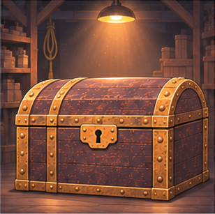
Michael asked, "What's in the—"But he never got the chance to finish his sentence, because suddenly the top of the started to lift up. A *hand* was pushing it open!
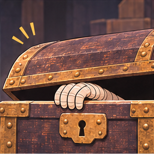
And then this *thing* got out.It was a . . . with all over its body! But the weird thing was that the didn't have a head!
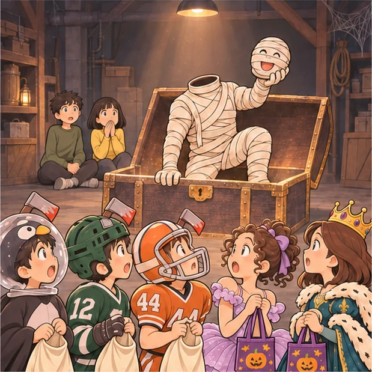
Well, it *had* a head, but the head wasn't on top of its where it was supposed to be. The was holding its head in its hand like a football! "Eeeeeeeeeeeek!" screamed Emily.
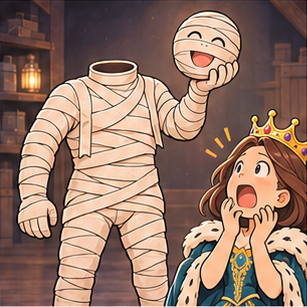
"It's Marvin!" I shouted. "Mrs. Patty's dead husband! His came to life!"
"He's the Halloween Monster!" yelled Ryan."We're gonna die!" Michael screamed."I *told* you we should have made a run for it!" I shouted.
"Bwa-ha-ha-ha!" said Marvin's head. I had no idea how it was able to talk, but it did. It said, "Give me your candy!
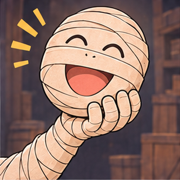
Put everything in the , or else."That head didn't have to ask me twice. I ran over and all the candy from my into the .
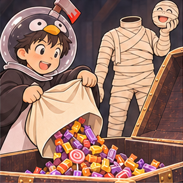
So did Ryan and Michael and Andrea and Emily and Neil the nude kid and Annette. I guess that made *all* the kids turn over their candy, because there were about a million hundred candy bars in the ."Bwa-ha-ha-ha!" said Marvin's head as Marvin danced around the .
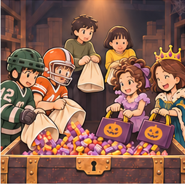
"It's mine! All mine! Now I have more candy than anyone in town!
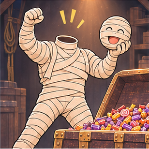
My life is complete! Bwa-ha-ha-ha!""That's what *you* think!"
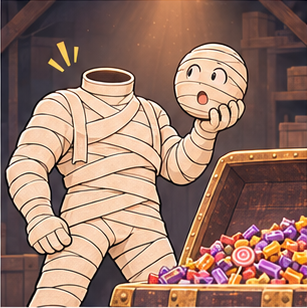
We all turned to see who said that. A big guy stepped out of the at the other end of the room. He had a on his head and a in his hand.
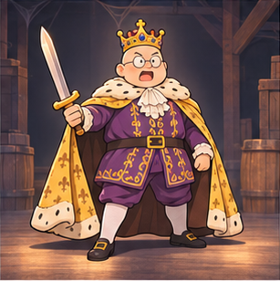
It was Mr. Klutz, our school principal!"It is I," he said, pointing his at Marvin the . "King Louis the Fourteenth.
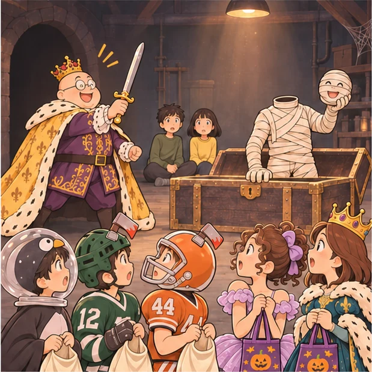
In the name of France, that candy!""Over my dead body!" Marvin said.
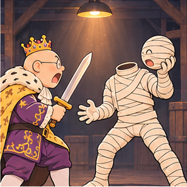
(That was really weird. Everybody knows mummies are dead bodies to begin with.)